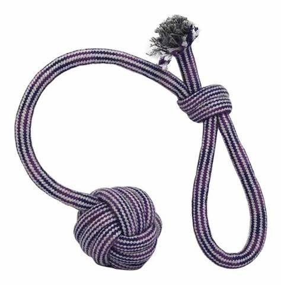
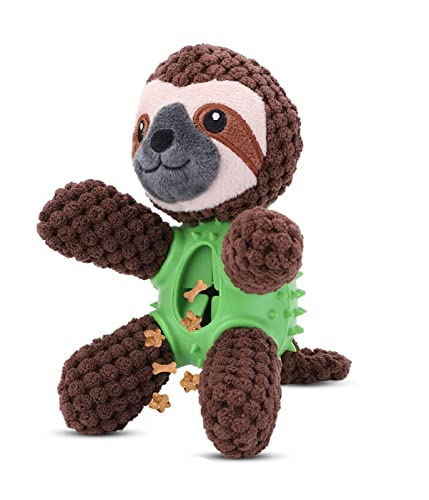

En el vasto y fascinante mundo de los perros, encontramos a compañeros leales que han compartido nuestra historia durante milenios. Desde sus orígenes como cazadores y pastores, estos animales han evolucionado hasta convertirse en miembros entrañables de nuestras familias. Su diversidad, que abarca desde pequeñas razas juguetonas hasta majestuosos gigantes, refleja una rica variedad de temperamentos y características. Los perros no solo nos brindan compañía y amor incondicional, sino que también enriquecen nuestras vidas con su inteligencia, habilidades y su capacidad única para conectarse con nosotros. Este universo canino, lleno de aventuras y emociones, nos invita a explorar el vínculo especial que compartimos con estos increíbles seres.
 LABRADOR |
 PASTOR ALEMAN |
 GOLDEN RETRIVER |
 BULLDOG |
 BEAGLE |
 CANICHE |
 ROTTWELLER |
 YORKSHIRE TERRIER |
PERRO SALCHICHA |
 |
 |
Las pelotas con pinchos son ideales para perros porque ayudan a limpiar sus dientes y encías, fomentan el juego y estimulan su curiosidad. Además, son resistentes y flotantes, perfectas para jugar en tierra o agua. En resumen, son una opción divertida y saludable para nuestros amigos peludos.  |
Los tiradores para perros son geniales porque fomentan el ejercicio y el juego interactivo, fortaleciendo el vínculo con tu mascota. También satisfacen su instinto de morder, reduciendo comportamientos destructivos. Son una opción divertida y saludable para tu perro.  |
Los muñecos para perros son geniales porque fomentan el juego y la actividad, fortaleciendo el vínculo entre dueño y mascota. También satisfacen el instinto de morder y pueden ayudar a reducir el estrés. Son una opción divertida y saludable para tu perro.  |